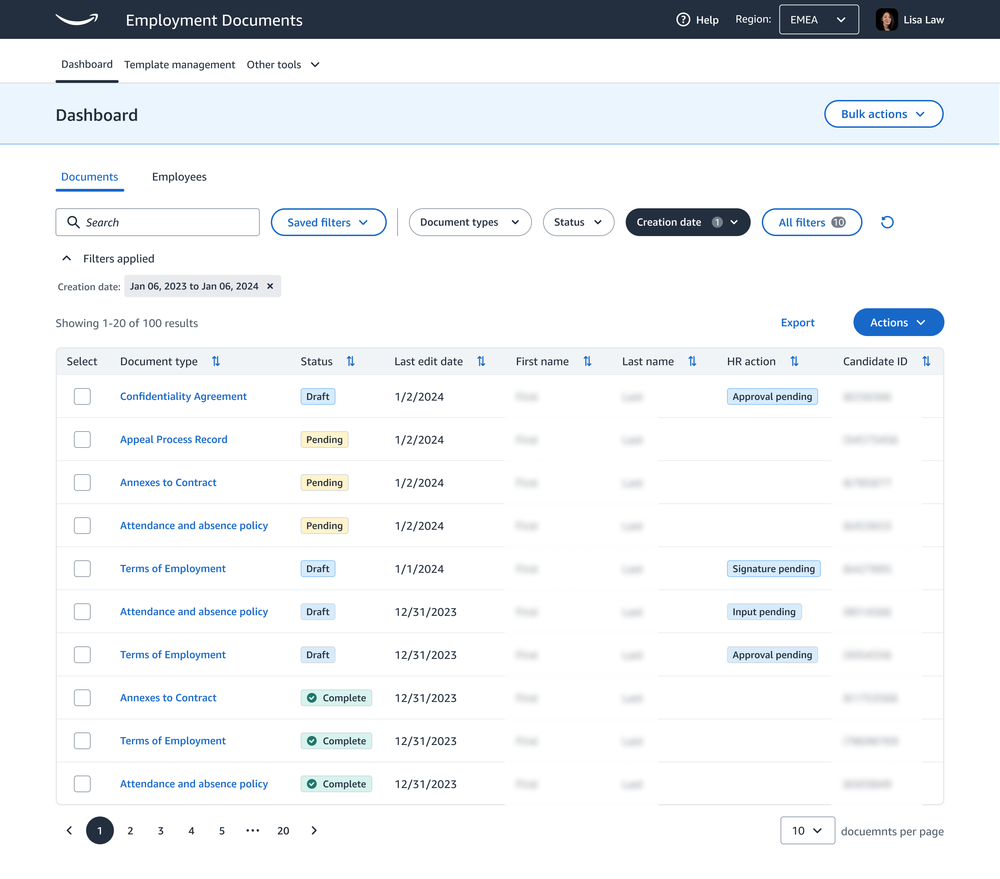
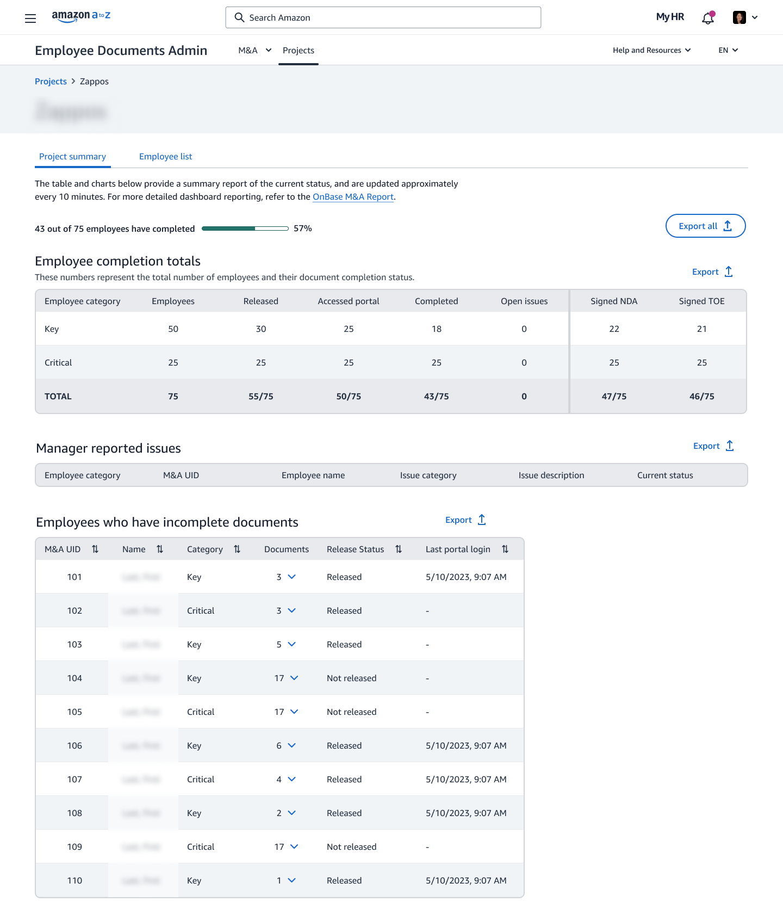
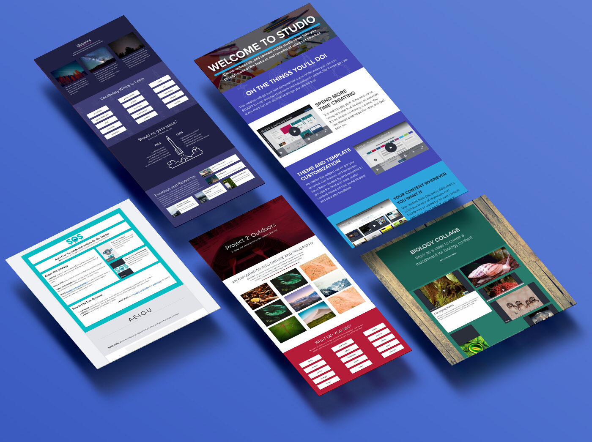
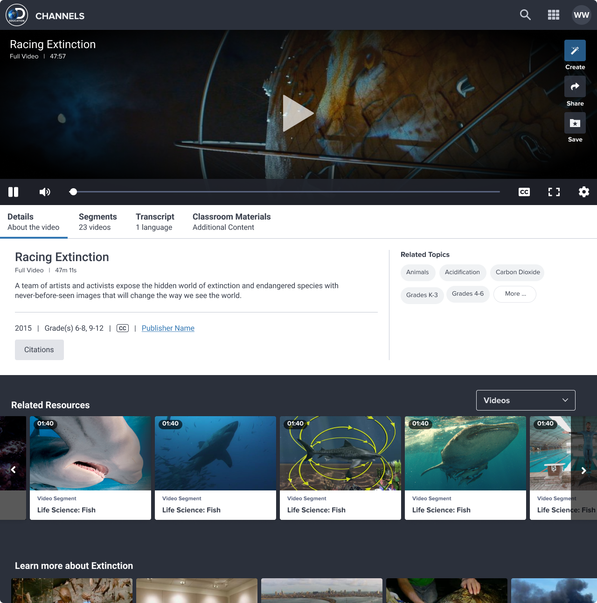

Product Design Leader & Teacher
Joseph Alfonso designs at scale.
15 years designing enterprise, HR, infrastructure, and design systems building products that serve millions while championing accessibility and measurable impact.

Amazon · Lead Designer · 2020–Present
Employee Document Management & AI
$10M+ in annual savings
Led UX for Amazon's global document platform: 4.8 billion documents across 67 countries. Then designed the AI integration layer across four product surfaces, turning a compliance tool into an intelligent decision-support system.

Amazon · Lead Designer · A to Z App
Self-Service Resignation
Humanizing Amazon's highest-stakes HR moment
Led the end-to-end redesign of Amazon's resignation flow in the A to Z mobile app. Ran leadership workshops, built the business case, and advocated for an experience that treated leaving employees with dignity — not just compliance.

Amazon · Lead Designer
AI Design & Tooling
Designing AI-powered products and building the tools behind the work
How I design AI-powered products and build the automation tools that make design work faster, smarter, and more human — from decision-support features at enterprise scale to the internal tooling that accelerates the design process itself.

Discovery Education · Lead Designer
Discovery Education Studio
Live collaboration for every classroom
Designed the first real-time creation and collaboration platform for K–12 classrooms, enabling students and teachers to freely create, edit, and collaborate live regardless of device or location.

Discovery Education · Lead Designer
Media Redesign
Significant learning gains through focused iteration
Led an iterative redesign of the Discovery Education media experience, showing how short, well-defined design cycles produce compounding improvements in how children engage with educational content.
Discovery Education · Lead Designer
Discovery Education Home
A new face for millions of teachers and students
Redesigned the Discovery Education platform homepage, establishing a new visual foundation, navigational architecture, and first impression for K–12 educators and students across the country.